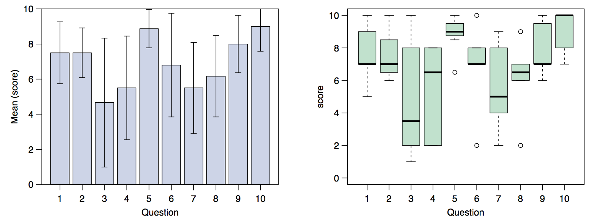

CB2-101: Introduction to Scientific Computing
The first edition of the course Introduction to Scientific Computing
(17-28 February, 2014) started with 19 participants 12 of which completed
the course (see the picture).
In this page we include all the material using during the course, and the evaluation anonymously submitted by the students. We would like to thank the participants for the fruithful comments that will allow us to improve the quality of our course.

In this page we include all the material using during the course, and the evaluation anonymously submitted by the students. We would like to thank the participants for the fruithful comments that will allow us to improve the quality of our course.
- Materials
Initial test Basic knowledge in informatics. Introduction to Linux February 17-18, 2014. Computers and Programming Languages February 19, 2014. Introduction to Python February 20, 2014. Data structure in Python February 21 and 24, 2014. Advanced functions and Modules February 25, 2014. Introduction to R February 26-28, 2014. Final problem set Anthem of CB2-101 Computer Love, Album: Computer World, Kraftwerk (1981). - Evaluation
In this page we included the evalaution form anonymously compiled by the participants to evaluate the quality of our course. Answers submitted with numbers from 1 (worst) to 10 (best) have been included in the following statistics calculated by R. Some positive comments not submitted in numerical form have not been included in this statistics.

Data - Rscript
University of Alabama at Birmingham.
619 19th St. South, WP220.
Birmingham (AL), 35249 (USA).